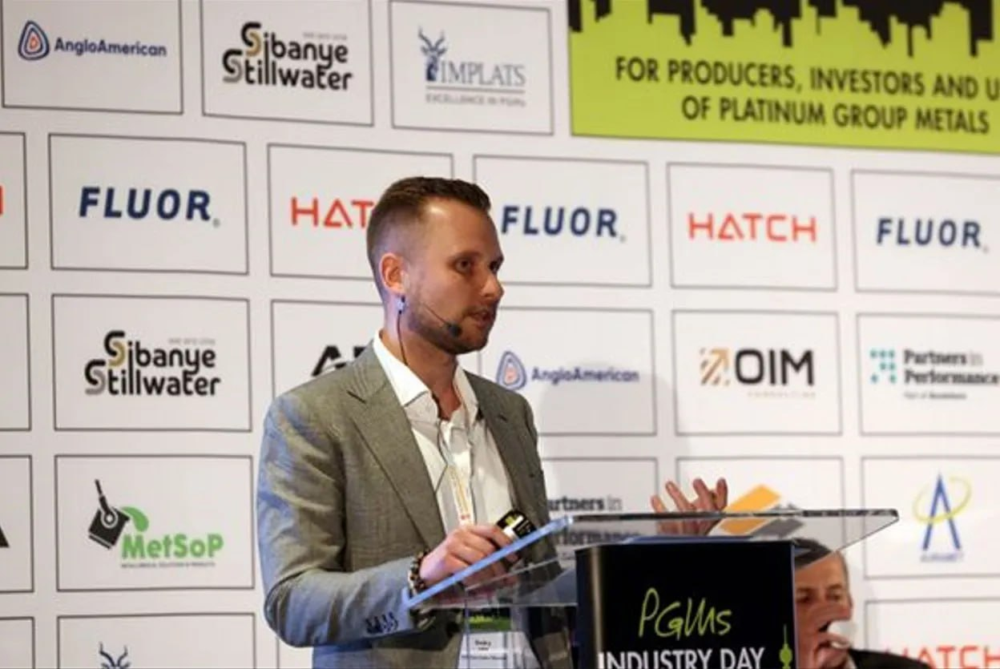

Новости компании
21 апреля 2025 года
«Норникель» объявляет о результатах производственной деятельности за первый квартал 2025 года
Москва, 21 апреля 2025 г. — «Норникель», крупнейший в мире производитель палладия и основных видов никеля,
платины и меди, объявляет предварительные консолидированные результаты производства за первый квартал 2025 года.
Старший вице-президент — операционный директор Александр Попов прокомментировал результаты производства:
«В первом квартале 2025 года производство платины увеличилось, в то время как выпуск других металлов был немного ниже, чем год назад.
Небольшое снижение производства никеля было временным и связано с плановыми краткосрочными ремонтами и техническим обслуживанием
оборудования, направленными на поддержание стабильной работы основных технологических установок.
Общий объем производства меди практически не изменился по сравнению с предыдущим годом, в то время как Забайкальский филиал увеличил
производство меди за счет повышения эффективности работы.
На металлургическом заводе «Надежда» в Норильске продолжилось наращивание мощностей по производству серы. Эта программа является
ключевой инициативой в рамках федерального проекта «Чистый воздух». В настоящее время первая и вторая технологические линии успешно
запущены в режиме комплексного тестирования, в результате чего выбросы диоксида серы, запланированные на 2024 год, успешно сокращены.
Программа по производству серы на полную мощность позволит сократить выбросы диоксида серы в Норильском промышленном регионе в 2 раза и
тем самым значительно улучшить качество воздуха для местных жителей. Достигнутый на данный момент прогресс был должным образом отмечен
государственными органами в ходе их контрольной и надзорной проверки Полярного отделения.
Компания подтверждает ранее объявленные производственные показатели на 2025 финансовый год.
7 апреля 2025 года
«Норникель» представляет инновационную стратегию в области палладия в Южной Африке
Йоханнесбург, Южная Африка — 7 апреля 2025 г. — «Норникель» представил свою стратегию для Центра палладиевых технологий
(CPT) на международной конференции PGMs Industry Day в Южной Африке. Эксперты компании поделились результатами технологических
разработок на ранних стадиях, которые могут изменить подход к использованию платины Группа металлы платиновой группы (PGM),
в том числе для применения в приоритетных для Африки отраслях, таких как энергетика, очистка воды и электроника.
Целью мероприятия в Йоханнесбурге было наладить диалог с потенциальными партнёрами по всему континенту: исследовательскими
институтами, промышленными компаниями и технологическими стартапами.
«Мы стремимся делиться опытом и сотрудничать с теми, кто, как и мы, считает палладий металлом будущего», — сказал Дмитрий
Изотов, руководитель Центра палладиевых технологий во время конференции.

Дмитрий Изотов на конференции PGMs Industry Day в Йоханнесбурге.
«Норникель» создал Центр палладиевых технологий как платформу для разработки новых решений на основе палладия.
Центр запустил более 25 научно-технических проектов, в том числе в области солнечной и водородной энергетики, микроэлектроники,
дезинфекции воды и химической промышленности. К 2030 году «Норникель» планирует создать портфель из более чем 100 продуктов на основе палладия.
Возможные области применения палладия, представленные на конференции в Южной Африке:
1. Повышение эффективности солнечных панелей с помощью слоя Pd для минимизации потерь света.
2. Повышение эффективности водородных топливных элементов и снижение затрат на производство экологически чистого водорода.
3. Сокращение расходов на проводящие компоненты в электронике за счёт сплавов на основе палладия.
4. Замена дорогостоящего иридия на палладий в OLED-дисплеях.
«Норникель» также объявил о скором завершении строительства своей «Палладиевой лаборатории» в Москве. Осенью 2025 года
лаборатория откроется для специалистов и станет отправной точкой для входа в технологическую экосистему Центра.
«Наш визит в Южную Африку — это часть глобального турне, направленного не только на продвижение наших проектов,
но и на поиск партнёров и создание международной сети сотрудничества. Африка обладает огромным неиспользованным потенциалом,
и мы считаем, что объединение усилий местных исследователей и бизнеса может способствовать устойчивому развитию», — добавил Изотов.
26 марта 2025 года
«Норникель» объявляет о результатах производственной деятельности за первый квартал 2025 года
Мурманск, 26 марта 2025 г. — «Норникель» подписал стратегическое соглашение на Международном арктическом форуме, направленное
на улучшение качества жизни в арктических сообществах.
Соглашение, заключённое с Федеральным агентством по делам национальностей России (ФАДН), расширяет сотрудничество в области
поддержки коренных народов. Эта инициатива подчёркивает ориентированный на человека подход форума под названием «Люди в Арктике»
и подтверждает роль «Норникеля» как ключевого инвестора в устойчивое развитие северных территорий.
Новое соглашение с Агентством предусматривает выделение 25,5 млн рублей (примерно 300 000 долларов США) на финансирование
инициатив в 2025 году. Эти средства будут направлены на поддержку ключевых проектов по расширению прав и возможностей и развитию потенциала коренных народов.
Одним из основных социальных проектов, поддерживаемых компанией в рамках соглашения, является «Национальная конкурсная
образовательная программа: коренные народы России. Школа публичной дипломатии». Эта программа, реализуемая МГИМО (Университетом
международных отношений России) в течение нескольких лет при поддержке «Норникеля», направлена на повышение квалификации представителей коренных народов.
С 2020 по 2024 год «Норникель» реализовал программу социально-экономического развития для жителей Таймырского полуострова
с общим бюджетом более 2 миллиардов рублей. За этот период компания значительно повысила уровень жизни в регионе. Основные направления поддержки включали:
1. Строительство домов и объектов социальной инфраструктуры в отдалённых поселениях. Для семей коренных народов были
построены десятки новых домов, а также сельские культурные центры и другие объекты инфраструктуры.
2. Развитие системы здравоохранения. В нескольких таймырских поселениях были открыты современные фельдшерские и акушерские
пункты, обеспечивающие местным жителям доступную медицинскую помощь.
3. Образовательные и культурные инициативы. Были запущены проекты по поддержке школ и детских центров, в сельских школах
внедрено обучение с использованием интернета, а для сохранения языков и традиций коренных народов организованы этнокультурные мероприятия.
«Для нас приоритетом в Арктике являются люди. Сотрудничая с государством в целях развития арктических территорий, мы
стремимся повысить качество жизни жителей Севера и сохранить уникальную культуру коренных народов. Наша долгосрочная
программа доказала эффективность государственно-частного сотрудничества для местных сообществ», — прокомментировал первый вице-президент «Норникеля» Николай Уткин.
Игорь Баринов, глава Федерального агентства по делам национальностей, прокомментировал: «Основная ответственность
за защиту прав коренных народов лежит на государстве, которое устанавливает основополагающие правовые нормы. Однако для
дальнейшего прогресса необходимо расширять добровольные обязательства, в том числе посредством корпоративной политики».
Подписание соглашения на Арктическом форуме в Мурманске, крупном российском городе и порту на северо-западе Арктики,
является важным шагом, подчёркивающим стратегическую роль «Норникеля» в развитии российского Севера. Компания демонстрирует
свою приверженность принципам устойчивого развития. Партнёрство с государственными органами и активное взаимодействие с
местными сообществами обеспечивают комплексный подход к развитию Арктики, ориентированный на человека. Эта стратегия обеспечивает
эффективный рост промышленного потенциала региона и процветание его жителей.
10 февраля 2025 года
«Норникель» объявляет о результатах производственной деятельности за первый квартал 2025 года
Москва, 10 февраля 2025 года — ПАО MMC «Норильский никель», крупнейший в мире производитель палладия и никеля I класса,
а также платины и меди, публикует аудированную консолидированную отчётность МСФО финансовые результаты за полный 2024 год.
ОСНОВНЫЕ ДОСТИЖЕНИЯ ЗА 2024 ФИНАНСОВЫЙ ГОД
1. Консолидированная выручка снизилась на 13% по сравнению с прошлым годом и составила 12,5 млрд долларов США из-за снижения цен на никель и ПГМ цены;
2. EBITDA снизилась на 25% в годовом исчислении до 5,2 млрд долларов США из-за снижения выручки и экспортных пошлин,
действовавших в течение всего года, в то время как рентабельность по EBITDA снизилась на 7% до 41%;
3. Операционные расходы в денежном выражении снизились на 3% в годовом исчислении до 5,1 млрд долларов США, в основном
за счёт ослабления российского рубля, снижения налога на добычу полезных ископаемых из-за падения цен на металлы и
продолжения реализации программы повышения операционной эффективности, которая позволила смягчить последствия растущей
инфляции в России и расходов, связанных с экспортными пошлинами;
4. Капитальные затраты сократились на 20% в годовом исчислении до 2,4 млрд долларов США в связи с более низким курсом
рубля, а также реализацией программы повышения эффективности инвестиций, включая оптимизацию выплат подрядчикам и
определение приоритетности инвестиционных проектов с использованием риск-ориентированного подхода;
5. Программа по очистке от серы на заводе «Надежда» достигла запланированной мощности: выбросы диоксида серы сократились
на 390 тысяч тонн в год, а эффективность очистки серосодержащих газов, подтвержденная государственным надзорным органом Росприроднадзором, составила 99,1%;
6. Чистый оборотный капитал сократился на 3% в годовом исчислении до 3 млрд долларов США, в основном из-за снижения
запасов металла и материалов, а также ослабления российского рубля;
7. Свободный денежный поток снизился на 31% и составил 1,9 млрд долларов США. Свободный денежный поток с учётом
процентов и арендных платежей составил 335 млн долларов США;
9. Чистый долг увеличился на 6% в годовом исчислении и составил 8,6 млрд долларов США, при этом соотношение чистого
долга к EBITDA по состоянию на 31 декабря 2024 года оставалось на консервативном уровне 1,7x;
10. В марте и октябре компания разместила два 100 миллиардов Корпоративные облигации в рублях, которые стали рекордными на российском рынке государственного долга.
27 января 2025 года
«Норникель» объявляет о результатах консолидированной производственной деятельности за 2024 год
Москва, 27 января 2025 г. — «Норникель», крупнейший в мире производитель палладия и никеля I класса,
а также крупный производитель платины и меди, объявляет предварительные консолидированные производственные
результаты за четвертый квартал и за весь 2024 год, а также прогноз производства на весь 2025 год.
Старший вице-президент — операционный директор Александр Попов прокомментировал результаты производства:
«В 2024 году производство всех основных металлов превысило наши производственные показатели благодаря повышению эффективности работы.
В 2024 году компания завершила реконструкцию плавка Печь № 2 на Надеждинском металлургическом заводе. Печь была практически
полностью перестроена, что позволило увеличить ее плавильную мощность на 25%. Нам удалось завершить этот плановый капитальный ремонт
за 60 дней вместо запланированных 90.
Компания продолжила диверсифицировать свой продуктовый портфель. Мы увеличили объёмы производства никеля премиум-класса для
гальванической отрасли в Китае. Кроме того, отдел карбонильного никеля в никелевом цехе электролиз
После ежегодного капитального ремонта в цехе Кольской дивизии был успешно запущен цех по производству специальных никелевых порошков.
Чтобы повысить удовлетворенность клиентов, мы увеличили долю медных катодов высшего качества на 10% до 84,3%.
Важным достижением 2024 года стало подтверждение эффективности программы по утилизации серы на Надеждинском металлургическом заводе
после запуска первой линии в конце 2023 года. В течение прошлого года «Норникель» последовательно внедрял оборудование для утилизации
газа, чтобы достичь проектных параметров, и успешно запустил вторую линию. В результате выбросы диоксида серы сократились на 390 тысяч
тонн, а эффективность очистки серосодержащих газов была подтверждена государственным надзорным органом Росприроднадзором на уровне
99,1%. Серная программа направлена на радикальное сокращение выбросов диоксида серы в Норильском промышленном регионе, что значительно
улучшит качество воздуха для его жителей.
28 декабря 2024 года
«Норникель» объявляет о результатах производственной деятельности за первый квартал 2025 года
Росприроднадзор (российский орган по надзору за охраной окружающей среды) подвел итоги первого года реализации флагманской
экологической инициативы «Норникеля» — «Серной программы». В ходе проверки было подтверждено, что эффективность очистки выбросов превышает 99%.
Серная программа на Надеждинском металлургическом заводе в Норильске началась в октябре 2023 года с запуска первой
технологической линии. В течение года «Норникель» постепенно доводил программу до проектной мощности, последовательно
вводя в эксплуатацию ключевое оборудование для утилизации газа. В 2024 году была введена в эксплуатацию вторая технологическая линия.
Серная программа «Норникеля» является частью федерального проекта «Чистый воздух» и его крупнейшим компонентом. Согласно плану, к
2024 году компания должна была сократить выбросы на 377 000 тонн. Специалисты Росприроднадзора с привлечением аккредитованной
государством лаборатории проверили ход реализации программы компании в ходе специального аудита.
Заключение, предоставленное «Норникелем», подтверждает, что оборудование для производства серной кислоты достигло своих проектных
параметров, все меры в рамках Плана по достижению квот на выбросы выполнены, а эффективность очистки газа составляет более 99%.
Общее сокращение выбросов загрязняющих веществ в 2024 году соответствует установленным целям (план: 377 600 тонн; фактическое значение: 386 500 тонн).
С 25 декабря каждый житель Норильска может самостоятельно оценить качество воздуха в городе. «Норникель» разработал и
передал городской администрации систему мониторинга качества атмосферного воздуха, которая наглядно отображает уровень
загрязнения в разных районах Норильска (доступна на сайте администрации).
Николай Уткин, первый вице-президент и руководитель по связям с государственными органами «Норникеля»:
«Серная программа представляет собой совершенно новое производственное предприятие, проект, уникальный по масштабу
и технологиям. Никто в мире раньше этого не делал, не говоря уже об Арктике. «Норникель» вкладывает огромные ресурсы в
свою экологическую программу и улучшение условий жизни в регионах, где работает компания. Эти усилия приносят свои плоды,
и теперь преимущества распространяются не только на жителей Норильска: это важный вклад в здоровье Арктики».
Станислав Селезнев, вице-президент «Норникеля»:
«Прохождение проверки Росприроднадзора было критически важным для «Норникеля». Результаты подтверждают, что наш проект
работает и эффективен. Мы намерены продолжать реализацию Серной программы. В следующем году мы планируем переработать почти
в два раза больше диоксида серы. Это позволит нам выполнить наши обязательства в рамках проекта «Чистый воздух» на этот период
и сократить выбросы в Норильске вдвое».
13 декабря 2024 года
Совет директоров «Норникеля» утвердил бюджет на 2025 год
Москва, 13 декабря 2024 года — Совет директоров MMC «Норникель», крупнейший в мире производитель палладия и никеля I класса, а также крупный производитель платины
и меди, утвердил бюджет компании на 2025 год.
В условиях сложной геополитической обстановки и значительных вызовов, волатильности на ключевых рынках, роста
инфляции и ключевой процентной ставки поддержание финансовой стабильности остается ключевым приоритетом «Норникеля».
В ответ на инфляционное давление Компания продолжает расширять свою программу повышения операционной эффективности,
которая направлена на сдерживание инфляции затрат с помощью разработки и реализации инициатив с долгосрочным и устойчивым
эффектом, направленных на улучшение операционных показателей за счет увеличения объемов производства, оптимизации затрат и внедрения инноваций.
Общий объем капитальных вложений, запланированных на 2025 год, составляет 215 млрд рублей. Поскольку финансовая стабильность является
корпоративным приоритетом, а стоимость заемных средств высока, Компания придерживается дисциплинированного подхода к принятию
инвестиционных решений, основанного на систематической, сквозной оценке рисков и определении приоритетности инвестиций. Ключевыми
приоритетами являются операционная безопасность, снижение технологических рисков и реализация стратегии Компании. Программа
капитальных вложений также охватывает экологические и социальные обязательства, а также инвестиции в вспомогательную инфраструктуру,
в первую очередь энергетическую и транспортную.
В 2025 году руководство планирует продать все объёмы производства металла, прогнозируя при этом, что ситуация на рынке металлов
останется сложной, а на рынке никеля будет наблюдаться профицит. В своей кадровой стратегии «Норникель» уделяет особое внимание
дальнейшему повышению своей привлекательности как работодателя с индексацией заработной платы, запланированной на уровне официально
зарегистрированной инфляции или выше.
Сергей Малышев, первый вице-президент и финансовый директор компании, прокомментировал утвержденный бюджет на 2025 год: «Бюджет
на 2025 год, в котором отмечается 90я годовщина «Норникеля», является исключительно амбициозным и напряженным с учетом очень
требовательной внешней среды. Это обеспечивает дополнительную мотивацию и повышает ответственность. Наша управленческая команда
стремится достичь поставленных целей, сохранить высокий кредитный рейтинг и поддерживать нашу инвестиционную привлекательность,
с какими бы трудностями мы ни сталкивались».
10 декабря 2024 года
«Норникель» представляет обзор рынка металлов
Москва, 10 декабря 2024 г. — «Норникель», крупнейший в мире производитель палладия и высококачественного никеля,
а также крупный производитель платины и меди, представляет четырнадцатый обзор по никелю, меди и платине Группа металлы (ПГМ) рынки.
Никель В 2024 году мировой рынок никеля третий год подряд столкнулся с избытком предложения. Однако качество этого избытка изменилось:
вместо низкосортного никеля появился высокосортный, а биржевые запасы никеля выросли более чем в два раза, превысив 100 тыс.
тонн в 2024 году, преимущественно за счёт притока китайского материала из недавно открытых
катод мощности. С учётом других неучтённых запасов и заниженных данных о запасах, фактическое накопление никеля 1-го класса в 2024 году может составить 150 тыс.
тонн, и, вероятно, аналогичные объёмы будут накоплены в 2025 году, что приведёт к ещё одному году избытка предложения на рынке.
В результате к середине 2024 года цена на никель упала до 15 500 долларов за тонну. Несмотря на новости о том, что Федеральная
резервная система США снизила процентные ставки, Центральный банк Китая объявил о самом агрессивном финансовом стимулировании
со времён пандемии, а несколько производителей в Австралии, Индонезии и Новой Каледонии объявили о сокращении производства, цена
на LME оставалась сдержанной и на момент написания статьи стабилизировалась в нижней части диапазона 15 500–16 000 долларов за тонну.
В 2024-2025, Ожидается, что на рынке никеля сохранится профицит в размере около 150 тыс. тонн никеля, который будет в основном
сосредоточен в секторе высокосортного никеля. Ввод в эксплуатацию новых мощностей в Индонезии по производству всего спектра
никелевой продукции, включая NPI, NPI-made
матовый
Производство MHP из HPAL, никелевого сульфата и никеля 1-го класса в сочетании с новыми мощностями по производству никеля 1-го
класса в Китае будет сопровождаться относительно схожим ростом использования никеля в целом, более активным ростом в секторах нержавеющей
стали, сплавов и специальных сталей, а также более зрелым ростом в секторе аккумуляторов для электромобилей.
В целом, около 40% всех производителей никеля работают в убыток при текущей цене, поскольку растущие поставки из Индонезии
оказывают давление на другие дорогостоящие производства по всему миру, так что это может стать потенциальным фактором роста
цен на никель. С одной стороны, учитывая масштабы потенциального сокращения поставок из Индонезии (учитывая неопределённость
с одобрениями RKAB, снижение качества NPI, быстрое истощение запасов высококачественного
запасы руды и потенциальный мораторий на строительство новых электролизных никелевых заводов), а также в других странах, первичное
предложение никеля может оказаться ниже, чем мы изначально прогнозировали. С другой стороны, устойчивость спроса на никель
в секторе производства нержавеющей стали и других областях, связанных с плавлением, может привести к ещё более высокому
потреблению никеля, поэтому рынок никеля потенциально может стать более сбалансированным.
Медь
После пика в почти 11 000 долларов за тонну в мае цены на медь снизились и к концу ноября составили примерно 9 000 долларов
за тонну. Эта тенденция к снижению обусловлена несколькими факторами, в том числе ослаблением опасений по поводу дефицита
предложения, снижением спроса со стороны инвесторов, неопределённостью в отношении спроса со стороны Китая, а также продолжающейся
деиндустриализацией в Европе и растущими опасениями по поводу торговой войны.
На рынке медного концентрата внимание по-прежнему сосредоточено на исторически низких значениях TC/RC. Несмотря на объявленное
сокращение производства китайским металлургическим альянсом CSPT, фактическое сокращение пока не произошло.
плавка производственные мощности расширяются. Ожидается, что в следующем году в строй вступит 2 млн тонн новых плавильных мощностей,
преимущественно в Китае, в то время как на рынок выйдет всего 0,6 млн тонн новых концентратов, а добыча полезных ископаемых будет
осуществляться в основном в Африке и других странах, не входящих в число основных производителей, за счёт китайских инвестиций.
Этот увеличивающийся разрыв, вероятно, окажет дальнейшее понижающее давление на цены TC/RC, создавая дополнительные трудности для
плавильных предприятий. Спотовые цены на TC немного выросли и в настоящее время составляют 10 долларов за тонну. В 2025 году ориентир
TC был установлен на уровне 21,25 доллара за тонну, но это не сильно облегчит положение отрасли, поскольку уровень безубыточности для
китайских плавильных заводов составляет около 40 долларов за тонну, что может привести к закрытию менее эффективных перерабатывающих предприятий.
Перспективы спроса на рафинированную медь выглядят неутешительными из-за сокращения промышленного производства и двух с половиной
лет пессимизма среди менеджеров по закупкам в Европе, а также неоднозначных перспектив в США. В то же время экономические показатели
Китая отражают неравномерный рост, а меры государственного стимулирования пока не оправдывают ожиданий. Однако, по нашему мнению,
у китайского правительства есть возможности для дальнейшей экономической поддержки в 2025 году, включая денежные вливания, налоговые
льготы и списание долгов, направленные на поддержку строительства, промышленности и сферы услуг. Также следует отметить, что спрос
на медь в электроэнергетике остаётся высоким, что обусловлено продолжающимися инвестициями в расширение электрических сетей и общими
экономическими сдвигами в пользу энергоёмких отраслей.
В целом мы ожидаем, что в 2024 году на рынке будет наблюдаться профицит в 200 тонн, а в 2025 году — баланс, поскольку ожидается, что
рост спроса на медь будет опережать рост мировой экономики в целом благодаря ускоренному развитию возобновляемых источников энергии
и электрифицированного транспорта, а также продолжающейся тенденции к увеличению потребления электроэнергии на душу населения. Более
того, глобальный сдвиг в сторону экономической регионализации, протекционизма и тенденция в государственной политике, направленная на
обеспечение самодостаточности в критически важных отраслях, потребляющих много меди, будут поддерживать спрос на медь в ближайшие годы.
Несмотря на сохраняющийся огромный дефицит предложения в следующем десятилетии, опасения по поводу дефицита снизились на фоне положительных
тенденций в сфере производства в Африке, обусловленных значительными инвестициями со стороны Китая.
PGMs
С момента нашего последнего выпуска цены на палладий, платину и родий продолжали двигаться в боковом тренде. По-видимому, это тупиковая
ситуация, поскольку цена на корзину PGM нашла свою фундаментальную поддержку, поскольку половина южноафриканских месторождений PGM нерентабельна
при текущей цене на корзину PGM. В то же время рост цен стимулирует переработку накопленного отработанного лома автокатализаторов, что, в свою
очередь, сдерживает котировки.
Ожидается, что в 2024 году спрос на палладий снизится на 6% по сравнению с прошлым годом. Ожидается, что рынок легковых автомобилей с двигателями
внутреннего сгорания сократится на 3% по сравнению с прошлым годом и составит 77,5 млн единиц. Несмотря на то, что замедление проникновения на
рынок электромобилей благоприятствует гибридам и способствует росту спроса на палладий, агрессивное сокращение поставок палладия производителями
в Китае, Японии и США нивелирует этот эффект.
Ожидается, что в 2024 году производство палладия снизится на 1% по сравнению с предыдущим годом. Из-за более быстрого, чем ожидалось,
восстановления плавильных мощностей в России добыча на рудниках восстановится до уровня предыдущего года, в то время как переработка,
как ожидается, снизится на 5% по сравнению с предыдущим годом. Добыча на рудниках только начала реагировать на недавнее падение цен на
палладий, вызванное сокращением запасов, и предстоящее значительное сокращение добычи в Северной Америке. При этом, скорее всего, это
произойдёт в Южной Африке.
Мы пересмотрели нашу предыдущую оценку дефицита рынка палладия на 2024 год (без учёта инвестиций) с 0,9 млн унций до почти сбалансированного
состояния в связи с увеличением объёмов производства в России и значительным пересмотром автомобильного спроса, связанным с более низким,
чем ожидалось, объёмом производства автомобилей и программами экономии палладия в производстве автокатализаторов в Китае, Японии и США.
Мы ожидаем, что в 2025 году рынок палладия останется сбалансированным, поскольку снижение добычи PGM в Северной Америке и Южной Африке
будет компенсировано восстановлением переработки автокатализаторов, в то время как общий спрос, как ожидается, будет стагнировать в
годовом исчислении, если не произойдёт ускорения в ответ на снижение процентных ставок в западном мире и меры по поддержке экономики в Китае.
Спрос на платину также имеет тенденцию к снижению. Использование металла в автомобильной промышленности страдает от сокращения рынка
дизельного топлива и обратной замены платины на палладий, поскольку некоторые производители уже полностью заменили платину на палладий,
в то время как спрос на платиновые украшения также падает, особенно в Китае из-за длительного периода стагнации цен. Однако это частично
компенсируется увеличением спроса на платину в других отраслях промышленности на 0,1 млн унций. Тем временем переход на водородную
экономику, похоже, снова откладывается из-за проблем с затратами. Все это приведет к снижению спроса на платину на 3% в годовом исчислении в 2024 году.
Ожидается, что в этом году производство рафинированной платины останется на прежнем уровне, поскольку производство рафинированной
платины в ЮАР будет выше, чем сокращающееся предложение платины из шахт, в результате стимулирующих мер по сокращению незавершённого
производства.
Соответственно, мы сохраняем нашу точку зрения о сбалансированном состоянии рынка платины в этом году.
Ожидается, что в 2025 году рынок платины останется практически сбалансированным, с небольшим дефицитом в 0,2 млн унций. Ожидается,
что добыча платиноидов в ЮАР будет снижаться на фоне сокращения прибыли шахт, что будет противодействовать падению спроса.
Ожидается, что в долгосрочной перспективе сохранится стабильный паритет цен на палладий и платину, поскольку взаимная замена Pt и
Pd в автокатализаторах сократит разницу в цене между этими двумя металлами. Однако цена на PGM будет зависеть от масштабов оптимизации производства в Южной Африке.
Последние новости о научно-исследовательской деятельности Палладиевого центра «Норникеля» представлены в полной версии отчета
«Квинтэссенция ПГП». Они включают в себя развитие использования палладия в традиционных областях применения ПГП, а также в
«зеленых» и высокотехнологичных отраслях.
15 ноября 2024 года
Искусственный интеллект и чистая энергия создают новые рынки для палладия
Сиань, 15 ноября 2024 г. — Развитие искусственного интеллекта и технологий чистой энергетики открывает новые горизонты для
рынка палладия. Этот металл стал важным компонентом в производстве современных процессоров, систем хранения данных и в отрасли
возобновляемых источников энергии.
Спрос на палладий в Китае демонстрирует уверенный рост, при этом импорт из России в 2023 году почти удвоился и достиг 554 000 унций.
По мнению китайских отраслевых экспертов, в стране Группа К 2030 году потребление металлов может вырасти до 6,6 млн унций.
«Развитие альтернативной энергетики, расширение вычислительных мощностей для искусственного интеллекта и повышение эффективности традиционных сфер
применения металлов платиновой группы приведут к дополнительному спросу на палладий как минимум в 40-50 тонн, — говорит Изотов, руководитель Центра
палладиевых технологий «Норникеля».
Недавние исследования показывают, что использование палладия в оборудовании для производства стекловолокна помогает снизить как его стоимость,
так и затраты на последующее обслуживание для конечных пользователей. В сфере электроники палладий может заменить дорогостоящее золото в микросхемах
центров обработки данных без ущерба для необходимых свойств.
Центр палладиевых технологий «Норникеля» реализует более 20 проектов в области высокоэффективных технологий. К 2030 году компания планирует
создать более 100 новых материалов на основе палладия.
Эти и другие перспективы применения палладия обсуждались на конференции «2024»
ПГМ Совещание по инновационным технологиям, организованное при поддержке «Норникеля» в рамках Китайского форума по развитию индустрии драгоценных
металлов в Сиане в ноябре 12-15. Мероприятие собрало ведущих экспертов отрасли для изучения новых технологий и решений на основе металлов
платиновой группы.
28 октября 2024 года
«Норникель» объявляет о результатах консолидированной производственной деятельности за 9 месяцев 2024 года
Москва, 28 октября 2024 г. — «Норникель», крупнейший в мире производитель палладия и никеля I класса, а также крупный производитель
платины и меди, объявляет предварительные консолидированные производственные результаты за третий квартал и девять месяцев 2024 года,
а также прогноз производства на весь 2024 год.
Старший вице-президент — операционный директор Александр Попов прокомментировал результаты производства,
«В 9-м квартале 2024 года добыча ключевых металлов продемонстрировала положительную динамику: Компания увеличила добычу меди и палладия по
сравнению с аналогичным периодом прошлого года, в то время как добыча платины и никеля практически не изменилась. Положительная динамика была обусловлена
повышением операционной эффективности и увеличением объёмов добычи. руда объемы.
Компания продолжила наращивать объёмы производства никеля премиум-класса, такого как «Nornickel Plating Grade» — для гальванического покрытия и «Nornickel
High Purity» — для производства суперсплавов, чтобы выйти на новые рынки. Кроме того, в никелевом цехе было открыто производство карбонильного никеля.
электролиз После ежегодного планового капитального ремонта в Кольском дивизионе был успешно запущен цех, где мы начали производить специальные никелевые порошки.
В третьем квартале 2024 года Компания завершила крупнейший капитальный ремонт за последние несколько лет.
плавка Печь № 2 на Надеждинском металлургическом заводе была полностью реконструирована. Печь была практически построена заново, в результате чего плавильные
мощности увеличились на 25%. Благодаря тому, что реконструкция была проведена в очень короткие сроки — 60 дней вместо запланированных 90, — производство никеля
было восстановлено уже в третьем квартале.
Принимая во внимание все реализованные инициативы, мы увеличили ранее объявленные производственные показатели по собственным российским кормам на 2024
финансовый год».